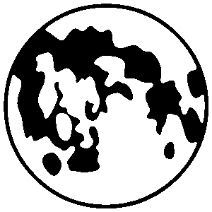
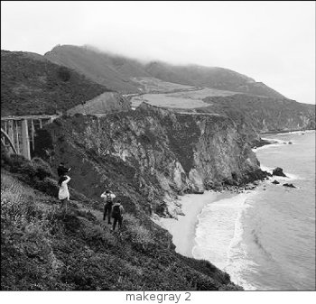
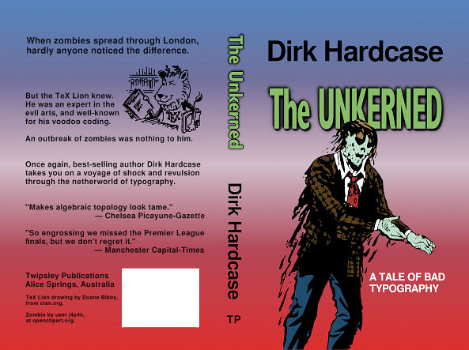

Novel Scripts
Part of LuaLaTeX novel document class. Version: 1.50, 2018/03/28.
DISCLAIMER: ALL OF THIS IS WITHOUT WARRANTY EXPRESS OR IMPLIED. USE ONLY AT YOUR OWN RISK.
LINUX USERS: Be sure that the scripts makebw, makegray, and makecmyk have executable permissions. They may not come that way in the zip file.
1. Introduction
The novel class assumes that your book is intended for print-on-demand (P.O.D.). Some of the widely-used P.O.D. services, especially in the U.S.A., have particular requirements for images embedded in PDF documents:
1) Images must be at exact size (inches) and resolution (pixels per inch). The PDF does not resize, resample, crop, or otherwise transform any images.
2) Grayscale images must be single channel DeviceGray (8 bits per pixel). Black/White line art must be 1 bit per pixel.
3) Images must not have private metadata (such as EXIF), or transfer curve instructions.
In addition, color cover artwork may need to meet these requirements:
4) Color must be DeviceCMYK, without embedded color profile.
5) Total ink (area coverage) must not exceed a specified limit, typically 240%.
Depending on your choice of print service, you may not need to meet all of the above requirements. But if you do meet them, then you have greater choice, and are less likely to encounter problems.
The purpose of these scripts is to bring images into compliance with 2 through 5. The scripts often cannot perform 1, but they will report the detected values for size and resolution, so you can decide for yourself.
2. Software
The scripts do not require TeX, but post-processing to PDF/X requires LuaLaTeX.
2.1. Image Magick
On Linux, Image Magick is available through your Linux package manager. There is a good chance that it is already installed in your system.
On Windows or OSX, get it from imagemagick.org. Scroll down the page to find the version best suited to your needs, but be sure it is Q16. On Windows, you may use either the system-installed or portable version (more info below).
2.2. Ghostscript
On Linux, Ghostscript is available through your Linux package manager. There is a good chance that it is already installed in your system.
On Windows or OSX, get the latest AGPL-licensed version from ghostscript.com. On Windows, you may use either the system-installed or portable version (more info below).
2.3. Portable Install (Windows Only)
If you use portable ImageMagick and/or Ghostscript, they must be found in a specific location. The scripts cannot locate portable files anywhere else.
Portable ImageMagick:
Place a copy of these files in folder novel-scripts\resource\portable\bin:
magick.exe magic.xml delegates.xml color.xml
Portable Ghostscript:
Place a copy of these files in folder novel-scripts\resource\portable\bin:
gswin32c.exe, gsdll32.dll (or the 64-bit versions of both)
At the time I write this, the above files from ImageMagick and Ghostscript are the only ones needed for these scripts. It does not hurt to include more files.
You also need support from Visual C++ Runtime files, which are normally part of any well-maintained Windows system. However, you might wish to find them in C:\Windows\System32, and copy them into novel-scripts\resource\portable\bin, just in case you move to a less well-kept system. I believe these are the ones needed:
mfc120u.dll, msvcp120.dll, msvcr120.dll, vcomp120.dll
When you run the scripts, they will first look in the novel-scripts\resource\portable\bin directory. If ImageMagick and/or Ghostscript is not there, then a system-wide installation will be used (if found).
2.4. LuaLaTeX
The PDF produced by makecmyk is not PDF/X. To convert that PDF to PDF/X, you will need LuaLaTeX, the novel document class, and a variety of TeX support packages. You may use TeXLive (2016 or later), MikTeX, or comparable distribution.
LuaLaTeX does not need the scripts, so you may also use an online service that provides TeX. Upload the NOTpdfx file, its accompanying tex template (edited), and compile with lualatex. Caution: Be sure that your files cannot be seen or downloaded by the public.
3. Book Interior Images
The novel class is not intended for color interiors. This is because a correctly-designed color interior requires good knowledge of graphic arts and printing technology. If you have that knowledge, then you probably have the professional software.
Interior images may be grayscale, or black/white.
3.1. Black and White (Line Art)
The term "line art" refers to images that are inherently black and white, without shades of gray. This may include text, when converted from vector to raster.
Script makebw (Linux) or makebw.bat (Windows) converts an image to 1-bit, single channel, black and white. It has one optional argument, which may be used to adjust the threshold (cutoff between black and white).
Often, best results are obtained when the resolution of a black/white image is the same as the native resolution of the printer. But since your book many be printed on various machines, your print service will tell you which resolution to use, typically 600 to 1200 pixels per inch.
Currently, a widely-used commercial printer resolves to 800 pixels/inch. This is the default value that will be used whenever an input image does not declare its resolution. In particular, it will be used when the input is PDF. You may change the default, as described below.
Do not attempt to emulate grayscale by fine dithering of black/white.

Instructions: Place the original image in the input folder. It may be color or grayscale. The altered image will appear in the output folder.
Windows: Launch makebw.bat (double click). Then enter:
makebw [-number] filename.ext
Linux: Open a command Terminal in the novel-scripts folder. Then enter:
./makebw [-number] filename.ext
Option: The optional number may be from 1 to 99. This is the threshold percent. Write the hyphen, but do not write the brackets. If no number is provided, value 50 is default.
A low threshold produces more white. A high threshold produces more black. This is a useful way to adjust weight of text.
If your input image is already black and white, then the script will not change the threshold (it can't), but it will perform some useful housekeeping.
The output file is named filename-t-BW.png, where t is the threshold (default 50).
Example shown here (original image above b/w result), using Windows: makebw -30 moon.png. The result appears more jagged than it would in print, due to the low resolution of web page images.
3.2. Grayscale Images
With grayscale images, the most common mistake is using RGB (three channels) rather than true grayscale (single channel). Even if an RGB image uses only shades of gray, it is still RGB as far as the printer is concerned, and that's a problem.
For best results, ensure that the original image does not have "important" areas are nearly-white or nearly-black. Depending on technology, printers do best with pure white, pure black, or grays 10%-90%. Shades that are nearly white or black are more likely to shift.
Most print services recommend grayscale image resolution of 300 pixels/inch. If your input image does not state its resolution, or if it is PDF, then 300 will be used as default. You may change this, as described below.

Script makegray (Linux) or makegray.bat (Windows) converts an image to single-channel Grayscale. It has one optional argument, which may be used for a sophisticated contrast adjustment.
Windows: Launch makegray.bat (double click). Then enter:
makegray [-number] filename.ext
Linux: Open a command Terminal in the novel-scripts folder. Then enter:
./makegray [-number] filename.ext
Option: The optional number may be from 1 to 9. This adjusts contrast in selective fashion. A low number boosts contrast in dark areas, at the expense of light. A high number boosts contrast in light areas, at the expense of dark. A middle number boosts midrange contrast, at the expense of both extremes. Default is no number, which does not change contrast.
If your input image is already Grayscale, then the script will perform some useful housekeeping.
The output file is named filename-c-GRAY.png, where c is the contrast adjustment (default 0, meaning no adjustment).
Example: The Bixby Creek photo was taken on an overcast day. The sky is light gray with little detail of interest. The ground cover is dark. This image was processed to grayscale using -2 option, which increases contrast in the dark areas (thus providing an overall lightening), at the expense of making the sky even less detailed.
Windows command: makegray -2 bixby.png
The grayscale image contains some areas that are nearly white (sky, and sea foam), or nearly black (a few shadows). Depending on the printer, these may be pushed toward or away from the extremes, creating an overall impression of less or more contrast in print. However, these areas do not contain any important details, so the information is retained.
4. Color Cover Image
Conversion to PDF/X-1a, with CMYK image at 240% ink limit, is a two-step process. First, you use the makecmyk or makecmyk.bat script, producing a PDF with the correct color space and ink limit. However, this file is not PDF/X. The second step requires LuaLaTeX, and produces PDF/X.
For best results, ensure that the original image does not have "important" areas that are nearly-white or nearly-black. Light pastels colors are difficult to produce accurately, and the eye is sensitive to slight color shifts. Very dark colors will be altered by the ink limit.
Most print services recommend color image resolution of 300 pixels/inch. If your input image does not state its resolution, or if it is PDF, then 300 will be used as default. You may change this, as described below.

4.1. Script Conversion to PDF CMYK, 240% Ink Limit
Preliminary processing via script. Output is not PDF/X:
makecmyk [-a] yourimagefile.ext
In the above, the image file extension may be the usual png, jpg, jpeg, tif, tiff, or pdf.
If the input image has a color profile attached, it will be observed. If not, then an RGB input image is assumed to be in sRGB color space, and a CMYK input image is assumed to be in a generic press space.
Option -a is rarely used. It sets the default input RGB profile to be Compatible with AdobeRGB1998.
The output is yourimagefile-NOTpdfx.pdf. This file contains the image as CMYK, 240% ink limit, without embedded color profile.
4.2. LuaLaTeX Conversion to PDF/X
Post-Processing using LuaLaTeX. Output is PDF/X:
The script's output PDF file is accompanied by a tex template. Edit the template. Be sure that you have the correct dimensions and image file name. The title may be almost anything, but it won't be exactly the title of your book (because this image is not your book). You cannot leave the title empty.
\SetTrimSize{width}{height} is finished cover, with bleed trimmed away.
\SetMediaSize{width}{height} is the larger area, including bleed.
Example: Suppose your book's Trim Size is 5.5in wide x 8.5in high. Based on the number of pages, the print service tells you that the spine width will be 0.6in. The Trim Width will be 5.5in+0.6in+5.5in = 11.6in. The Trim Height will be 8.5in. If bleed 0.125in is required, then the Media Width will be 0.125in+11.6in+0.125in = 11.85in, and the Media height will be 0.125in+8.5in+0.125in = 8.75in. So, your tex template will use:
\SetTrimSize{11.6in}{8.5in}
\SetMediaSize{11.85in}{8.75in}.
The Trim will automatically be centered in the Media.
If you designed your original input image correctly (with bleed), it was at the Media Size. The NONpdfx file is also at the Media Size.
The template is pre-set to PDF/X-1a:2001, with Output Intent CGATS TR 001 (known as US Web Coated SWOP v2). The color profile will not be embedded. These are the most common requirements for print-on-demand in the U.S.A. You may change these if necessary: See the instructions for the \SetPDFX command, in the main novel documentation.
Place the edited tex file in the same folder as the script-processed NOTpdfx file. Then compile the tex file using lualatex.
If successful, the output file meets whichever PDF/X standard you set within the tex file. It will be named yourtexfile-PDFX.pdf.
If unsuccessful, look at the log file. More likely than not, you are missing some required package. Install the missing TeX package, then try again.
Compiling with lualatex does not require the scripts. So, if you do not have TeX, you can upload the edited tex template and NOTpdfx files to an online service, and compile with LuaLaTeX there. They will have novel class, and the necessary TeX support packages. Be sure that your files are not publicly visible.
No cheating: The NOTpdfx file has a special internal marker, which is detected by LuaLaTeX when you compile the tex template. If you attempt to place a file that doesn't have the marker, it will be rejected. You cannot cheat by changing the file name.
4.3. Viewing the Converted Image
Since your computer screen only shows RGB, you can only view the CMYK image using software that internally coverts CMYK to RGB. Most image viewers and PDF readers do that automatically. However, they do not account for the specific CMYK color profile. Instead they use a quick algorithm that is far from accurate. If you view the CMYK file, you might think that something went wrong, because the color rendition is so poor. But in most cases, that's the fault of the viewer.
For your convenience, the makecmyk scripts also provide an output RGB softproof image. Then, you can fairly compare the softproof to the original input, and see where colors have changed, without the need of CMYK to RGB conversion.
Adobe Reader (and a few other programs) intelligently convert CMYK to RGB display, based on a likely printer profile. The worst results typically come from general-purpose viewers, and from JavaScript-based PDF viewers.
5. Changing the Default Resolution
If the input is a png, jpg, or tif image, then the output will always have the same pixel size. If the image internally states its resolution (pixels/inch), then the print size (inches) is calculated automatically.
Sometimes, the input image does not state its resolution. In this case, the scripts will assign a default resolution. Then, the print size will be calculated based on this default. For makebw, the default is 800; for makegray and makecmyk it is 300. These are widely-used values among commercial printers. However, they may or may not be the values preferred by your print service.
If the input is PDF, it will certainly state its print size (inches). But PDF is allowed to contain objects with different resolutions, as well as vector objects with no specific resolution. As a result, "the resolution of a PDF" is not really meaningful. Many programs assume a value of 72 pixels/inch, which dates back to antiquity and is inapplicable here.
So, when the input is PDF, the script applies its own default resolution. Then, the number of pixels is calculated from the print size (inches) and the resolution (pixels/inch). And, in the case of makecmyk, the calculation applies to the raster image, contained within the output file.
If you need default resolutions other than 800 or 300, you can change them. This can be done temporarily or permanently. The method depends on whether your platform is Windows or Linux (I cannot test OSX, but probably the Linux method works there).
Do not change the default resolution "just because you can." In most circumstances, the sharpness of print is limited by factors other than image resolution. Excessive resolution merely makes your files larger, and the print service might object.
If you need to change the resolution of a raster image that does have its resolution specified, then you must use a graphics program. The scripts do not resample.
5.1. Changing Default Resolution on Windows
For a temporary change to default resolution, open a Command Prompt window in the scripts folder. Type:
set DEFRES=NNN
where NNN is the desired default resolution. Be sure not to type a space after the number. Return to the next command line, and proceed by calling the script, in usual fashion. The setting remains in effect as long as that same prompt window is used, even if you change the script.
To permanently change the default resolution of a particular script: Open the script file in a plain text editor. A few lines from the top, you will see:
if "%DEFRES%"="" ( set DEFRES=XXX)
where XXX is 300 or 800. Change the number to what you need. Be sure that you do not insert a space between the number and the closing parenthesis.
A temporary setting always overrides the setting written within the script.
5.2. Changing Default Resolution on Linux
For a temporary change to the default resolution, open a Terminal in the scripts folder. Type:
export DEFRES="NNN"
where NNN is the desired default resolution. Don't forget the quotes. Return to the next command line, and proceed by calling the script, in usual fashion. The setting remains in effect as long as that same Terminal is used, even if you change the script.
To permanently change the default resolution of a particular script: Open the script file in a plain text editor. A few lines from the top, you will see:
if [ "$DEFRES" == "" ]; then DEFRES="XXX"; fi
where XXX is 300 or 800. Change the number to what you need. Don't forget the quotes.
A temporary setting always overrides the setting written within the script.
Appendix A: RGB/CMYK Color Shift
You do not need to know this, just to use the scripts and prepare your document. But here is some information regarding how colors may change, when converting from RGB to CMYK at ink limit.
Gamut is the physically possible range of colors a device can show. Your computer screen and the printer have different gamuts. They are not nested. So, there are colors you can see on screen that cannot be printed with the technologies available to you. And, unless you have an expensive wide-gamut monitor designed for the purpose, there are colors that can be printed but not seen on your screen. Of course, there are many other colors that cannot be seen on your screen or printed.
You can read about color spaces elsewhere. Most professionals recommend that when an RGB image is prepared for print, it should be in the AdobeRGB color space, rather than sRGB, because more printable colors can be accessed that way. Yes, but those are colors your screen cannot display well, so there's not much advantage. If you had the equipment to properly handle the AdobeRGB color space, you'd be using professional software instead of these scripts. So, don't hesitate to use sRGB if it is more convenient.
If you submit your color image in CMYK, which is the point here, then the original RGB color space is lost during the conversion process. Instead, the printer is given direct instructions: This much Cyan, this much Magenta, this much Yellow, and this much Black.
The following examples show you that the color change from screen to print may be a lot, or a little, depending on circumstances. Original RGB images are compared to their softproof RGB images.
A.1. Example: Max Colors Change
The image at right uses maximum RGB values, such as (255,0,0) for red, plus a number of maximum shades, tints, and blends.
CLICK HERE to toggle views of the original RGB image, and its softprooofed CMYK version (converted back to RGB, of course).
Notice the color changes. Cyan and blue are prominently changed. Green is changed a little, but yellow and red not so much. The most prominent changes are where the gamut of screen and printer are very different. Neither screen nor printer can provide a very vivid red, but the deficiencies are similar, so the change is small.
Don't panic. This is less of a tragedy than you might imagine. The reason is that regardless of whether they can be printed accurately, most of these colors are outside the gamut of inexpensive LCD computer screens. Whatever you see isn't the real sRGB color anyway. The conversion from RGB to CMYK merely converts faked colors into other faked colors.
Moral: Don't design your cover with such extreme colors, if you care about accuracy.
Note that the ink limit has little do do with this. Very vivid colors don't use a lot of ink.
A.2. Example: Natural Light Maintained
This photo was taken on an overcast day along the California coast.
CLICK HERE to toggle views of the original RGB image, and its softproofed version. The softproof is the CMYK file converted back to RGB, so you can make a fair comparison of images in the same color space. However, returning to RGB does not restore colors that were lost or changed in the RGB to CMYK conversion.
The two images are nearly identical. That's because except for some tiny places that are hard to notice, the colors of this image are within the mutual gamuts of my screen and the printer. Both screen and printer are capable of those colors.
If you look carefully, you will see that the ground cover is slightly lighter in the softproof. This is because the low foliage has many small, dark areas that cannot be reached by the ink limit. Those dark areas are printed slightly grayer and lighter, making the overall ground cover look lighter.
You will also notice that the gray sky has a slightly different hue. Possibly this is due to imprecision and rounding in the conversion math.
A.3. Example: Moderately Bright Colors Maintained
Here is a painting from the early Renaissance era. The red, green, and blue were state of the art, back then. Most of the color is common to both screen and printer, so the image converts well from sRGB to CMYK.
CLICK HERE to toggle views of the original RGB image, and its softprooofed CMYK version (converted back to RGB, of course).
If you look very carefully, you will see that some of the reds, greens, and blues are slightly shifted, and the shadows are slightly different. To some extent, this is due to the ink limit, which makes it difficult to get dark colors. In the softproof image, some areas that should have been dark brown were converted to a more neutral dark or black color, due to ink limit. And, in order to "make room" for dark color shifts, some of the mid-range colors were slightly shifted.
A.4. Common Gamut
Here is an image composed of hues at ten degree intervals around the sRGB color circle. In each square, the most vivid color is at upper right. Along the right edge, the color fades to white at bottom right. Along the bottom, the value darkens to black at the lower left corner.
CLICK HERE to toggle between original and softproof. You will notice that colors in the upper right of each square, and along the top, change the most. There are changes along the left edge of each square, but those are hard to notice due to the darkness there.
Now turn on the MONITOR GAMUT MASK, which blacks out colors that your screen probably cannot show accurately (based on my own screen). Also turn on the PRINTER GAMUT MASK, which blacks out colors that cannot be printed in CMYK.
With the masks enabled, toggle between original and softproof colors. Behold! There is very little change. If a color is within the gamut of both screen and printer, then it is possible to get printed color that looks like what you saw on your computer.
If accurate color is important to you, then you can design your artwork so that it uses only the colors in mutual gamut. But don't get too excited about that. Remember that your computer screen probably isn't calibrated, the commercial printer (for P.O.D.) does not offer printer standards, and readers won't be viewing your book under standard lighting conditions.
More to the point: Readers won't be buying your book by its cover, will they? Well, even if they do, they will probably only see a reduced image in a web browser.